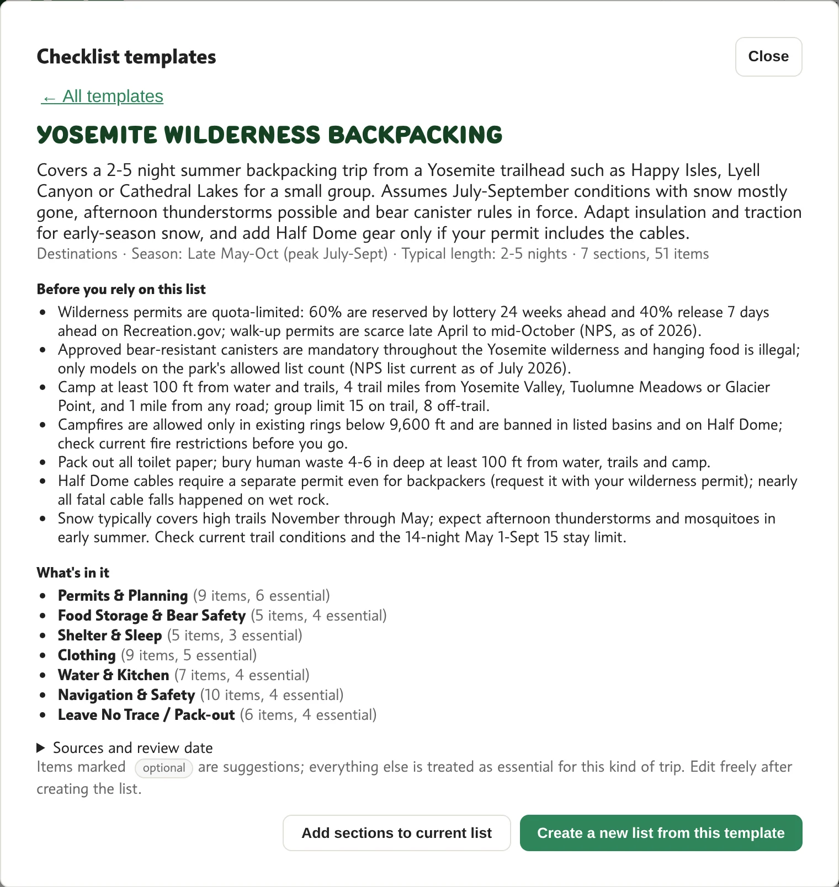
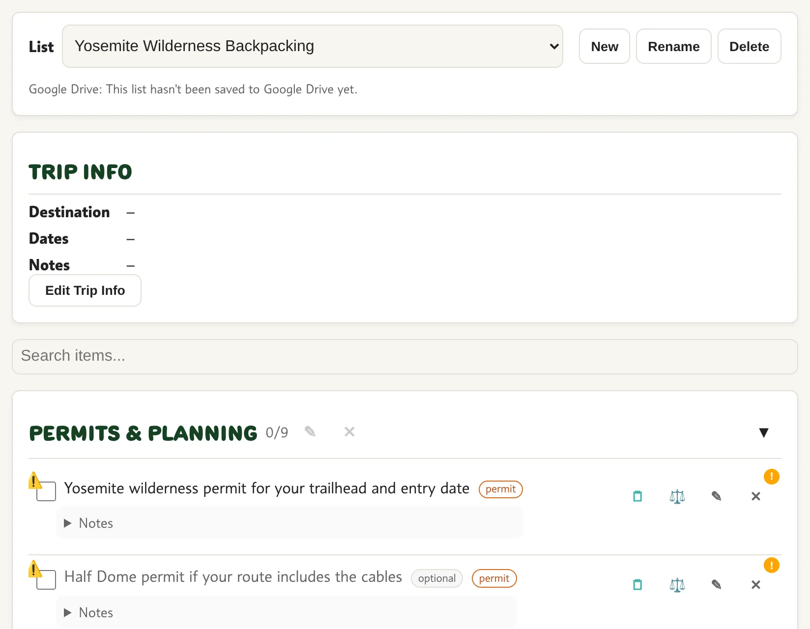

3Preview, then choose  12345 1Back to all2What's inside3Sources and review date4Add its sections to your current list5Create a new list
4Your new list  12 1The new list is selected2Sections and items Everything can be edited.